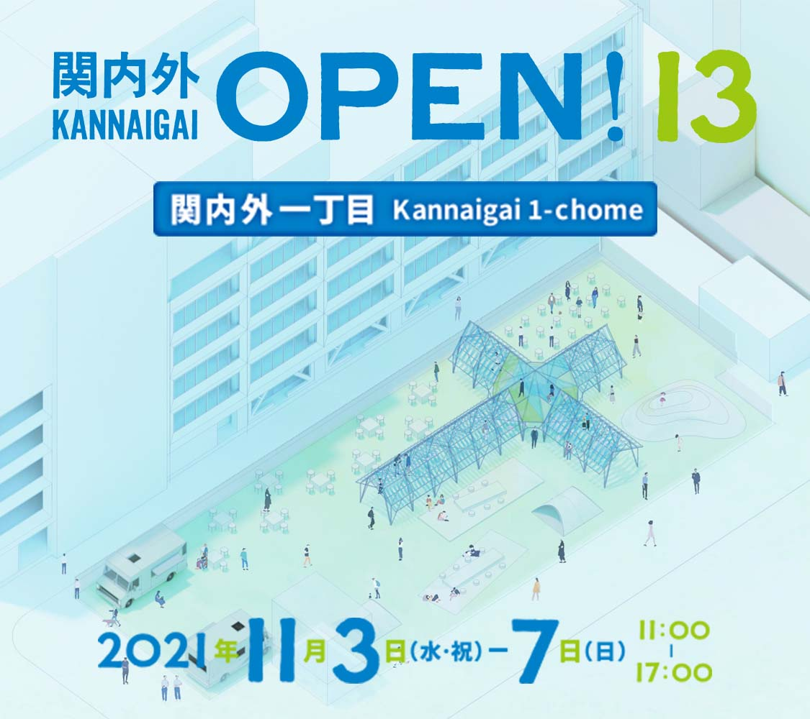
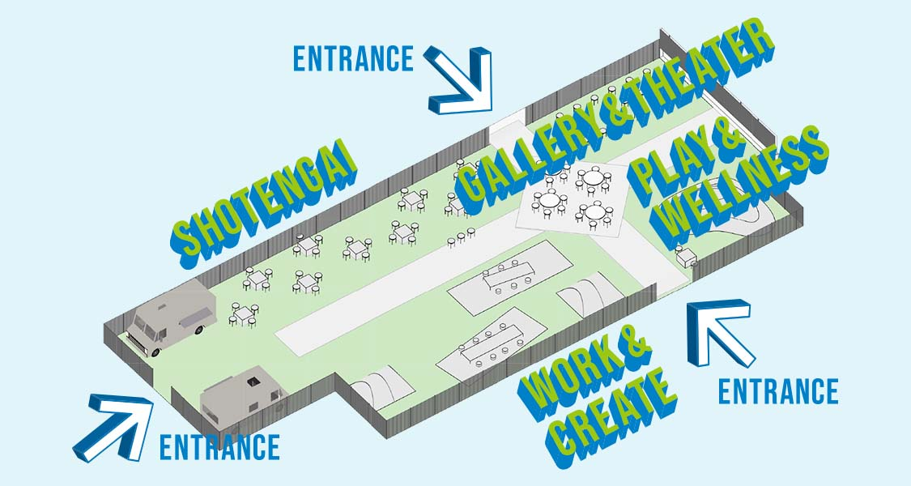

関内外OPEN!は、2009 年から横浜・都心臨海部エリアを中心に活動するクリエイターによって毎年開催されているイベントです。
開催13 回目となる今回は、コロナウイルス感染症下でも実践できる対話や交流を目指し、屋外空間に期間限定の「創造と実験の場」を作ります。アートやデザインにまつわる展示やトーク、また普段のアトリエや仕事場から場所を移し“屋外ではたらく”ことを通じて、クリエイターのまち「関内外一丁目」が生まれます。
横浜の屋外空間にて、クリエイターが手掛ける創造的実験の５日間に、ぜひご注目ください。

会場に設置されたブースでのクリエイターらによるトークセッション
クリエイターによるアートやデザインにまつわる展示・体験と活動の発信
屋外空間にテントや什器を設置、遊びや体験を通じた交流の場作り
＜出張オープンスタジオ＞
アートコネクトヨコハマ／アートスペース「と」関内／アイトゥーン／アルファデザイン／オンデザイン／トートアーキテクツLab／トキワビル／ピクニックルーム、ほか
＜トーク参加のみ・その他＞
I☆N FACTORY／ike atelier／SITE BAY YOKOHAMA／THE DARKROOM INTERNATIONAL／DesignBase／BUKATSUDO／mass×mass 関内フューチャーセンター／八板建築設計事務所／THE RABBITS' BASE、ほか
＜出張オープンスタジオ＞
アートコネクトヨコハマ／アートスペース「と」関内／アイトゥーン／SITE BAY YOKOHAMA、ほか
＜出張オープンスタジオ＞
アートコネクトヨコハマ／アートスペース「と」関内／アイトゥーン／アイムホーム／asamicro／SITE BAY YOKOHAMA／藤棚デパートメント／ピクニックルーム／mass×mass 関内フューチャーセンター、ほか
＜出張オープンスタジオ＞
アートコネクトヨコハマ／asamicro／トートアーキテクツLab／ファボリと神奈川・緑の劇場／ファブラボ関内／藤棚デパートメント／mass×mass 関内フューチャーセンター／Ari’sWalk & mya-mya／明蓬館高校 横浜・関内SNEC/CONEC、ほか
＜トーク参加のみ・その他＞
アートスペース「と」関内／アイトゥーン／認定NPO 法人あっちこっち／飯田善彦建築工房／stgk／オンデザイン／SITE BAY YOKOHAMA／tenjishitsu:Tür aus Holz 常盤町／似て非works／ピクニックルーム／BUKATSUDO YOGA部／プラプラックス／LAUNCH PAD GALLERY、ほか
＜出張オープンスタジオ＞
アートコネクトヨコハマ／アートスペース「と」関内／アイトゥーン／asamicro／オンデザイン／コンテンポラリーズ／トートアーキテクツLab／トキワビル／似て非works／BUKATSUDO YOGA部／藤棚デパートメント／mass×mass 関内フューチャーセンター／LAUNCH PAD GALLERY、ほか
＜トーク参加のみ・その他＞
SITE BAY YOKOHAMA／ときにわ／ピクニックルーム、ほか